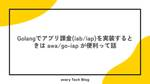
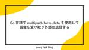
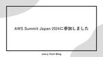
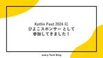
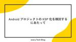
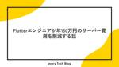

every Tech Blog
https://tech.every.tv/
株式会社エブリーのTech Blogです。
フィード

Golangでアプリ課金(iab/iap)を実装するときは awa/go-iap が便利って話
every Tech Blog
この記事は every Tech Blog Advent Calendar 2024(夏) 28日目の記事です。 はじめに DelishKitchenとヘルシカでバックエンドエンジニアをしているyoshikenです。 今回は新規アプリ開発の際に、Android/iOSアプリの課金処理(subscription)について awa/go-iapを使用して大変便利だったので、その紹介をしたいと思います。 awa/go-iap: go-iap verifies the purchase receipt via AppStore, GooglePlayStore, AmazonAppStore and …
4日前
リアーキテクチャを支えるテスト駆動開発：効果的なリファクタリングの方法 1
1
every Tech Blog
この記事は every Tech Blog Advent Calendar 2024(夏) 27日目の記事です。 目次 はじめに 背景と問題点 既存設計の問題 新しい設計方針 リファクタリングの準備 テストを書く リファクタリング作業 実装する テストする まとめ 終わりに はじめに DELISH KITCHENのiOSアプリ開発を担当している池田です。DELISH KITCHENでは皆様の料理体験がより良いものになるよう、日々新しい機能を追加しています。今回は「リアーキテクチャを支えるテスト駆動開発：効果的なリファクタリングの方法」について、実際の経験をもとにお伝えします。テスト駆動開発の重…
5日前
Amazon QuickSightを使用してインタラクティブな可視化をしてみる
every Tech Blog
はじめに はじめまして！開発本部のデータ＆AIチームに4月に新卒入社した蜜澤です。 最近Amazon QuickSightを使用してダッシュボード作成に励んでいるので、QuickSightにおけるインタラクティブなグラフの作り方を紹介しようと思います！中でも、割合系の指標に対してフィルターを適応するのに苦戦したので、そのあたりの作り方を説明します。 この記事はevery Tech Blog Advent Calendar 2024(夏) 26日目の記事になります。 作成するグラフのイメージ 性別、年代、レシピ名を指定すると、CTRの折れ線グラフが表示される。 使用する模擬データ 実際のデータを…
6日前

Go 言語で multipart/form-data を使用して画像を受け取り外部に送信する
every Tech Blog
この記事は every Tech Blog Advent Calendar 2024(夏) 25 日目の記事です。 はじめに こんにちは、24 新卒として 4 月から入社し、DELISH KITCHEN 開発部でソフトウェアエンジニアをしている新谷です。 現在取り組んでいる業務で、画像を受け取って外部に送信する処理を行う API を作成する機会がありました。そこで学んだ、Go 言語における multipart/form-data を使った画像の取り扱い方について紹介します。 背景 開発した機能としては、クライアントがアップロードした画像を API サーバーで受け取り、外部の API に POS…
7日前
RDS で EBS BurstBalance が枯渇した事例の紹介
every Tech Blog
この記事は every Tech Blog Advent Calendar 2024(夏) 24 日目の記事です。 はじめに こんにちは。DELISH KITCHEN 開発部 RHRA グループ所属の池です。 RHRA グループでは主に小売向けプロダクトの開発を行なっています。 本記事では、RDS の EBS BurstBalance が枯渇してパフォーマンスが著しく低下した事例について、その調査過程で得られた知見を共有したいと思います。 背景 事象が発生した環境では、以下の構成の RDS インスタンスを使用していました。 MySQL 5.7.44 インスタンスタイプ: db.t3.mediu…
8日前

AWS Summit Japan 2024に参加しました
every Tech Blog
この記事は every Tech Blog Advent Calendar 2024(夏) 23日目の記事です。 こんにちは 開発本部データ&AIチームでデータエンジニアを担当している塚田です。 今回は先日行われたAWS Summit Japan 2024に現地参加する時間が取れましたので、 昨日の「Kotlin Fest 2024 に ひよこスポンサー として参加してきました！」に引き続きイベントレポートですが、個人的に印象に残ったことや聴講したセッションについて触れたいと思います。 tech.every.tv セッション動画やセッション資料も期間限定で公開されているようなので、気になる方は…
9日前

Kotlin Fest 2024 に ひよこスポンサー として参加してきました！
every Tech Blog
はじめに こんにちは、株式会社 エブリー DevEnableグループです。 先日のGo Conference 2024に引き続き、本日、約5年ぶりのオフライン開催となったKotlin Fest 2024にひよこスポンサーとして参加してきました！ Kotlin Fest運営の皆様および参加された皆様、お疲れ様でした！ 早速参加レポートをさせていただきます。 www.kotlinfest.dev 5年ぶりのオフライン開催 Kotlin Fest 2024は今回5年ぶりのオフライン開催となりました。会場はベルサール渋谷ファーストの2Fを貸し切って、2つのセッションルームと1つのスポンサーブース兼フリ…
10日前
8年前にKotlinを採用してたくさん恩恵を受けた話
every Tech Blog
この記事は every Tech Blog Advent Calendar 2024(夏) 21 日目の記事です。 はじめに こんにちは、エブリーでCTOをしている今井です。 Kotlin Fest 2024 の開催がいよいよ明日に迫ってきました。 エブリーでは8年前にDELISHKITCHENのアプリを作り始めた時からKotlinを使っており、 今回KotlinFestを通じて、Kotlinコミュニティに貢献できることを嬉しく思っております。 このブログでは、Kotlinを採用した当時の状況や、採用して良かったことに関して振り返ってみたいと思います。 Kotlinの採用 FirstCommi…
11日前

Android プロジェクトの KSP 化を検討するにあたって
every Tech Blog
この記事は every Tech Blog Advent Calendar 2024(夏) 20 日目の記事です。 はじめに こんにちは、DELISH KITCHEN でクライアントエンジニアを担当している岡田です。 今回は KSP 化について執筆させていただきます。 概要 Kotlin でより効率的な開発を行う上で、アノテーション処理は欠かせない要素です。アノテーションを利用することで、定型的なコードを自動生成したり、コンパイル時にコードの検証を行ったりすることができます。 Kotlin のアノテーション処理といえば、従来は kapt が主流です。しかし、近年ではより高速でKotlinの言語…
12日前
LiveData を Kotlin Coroutines Flow に移行した話
every Tech Blog
この記事は every Tech Blog Advent Calendar 2024(夏) 19 日目の記事です。 はじめに こんにちは、DELISH KITCHEN でクライアントエンジニアを担当している kikuchi です。 Kotlin Fest 2024 の開催が近づいてきましたので、今回は折角の機会ですので Kotlin に関わる話として DELISH KITCHEN で一部の処理を LiveData から Kotlin Coroutines Flow に移行した話をまとめてみたいと思います。 移行を考えた背景 現状 DELISH KITCHEN ではアーキテクチャに MVVM (…
13日前

Flutterエンジニアが年150万円のサーバー費用を削減する話
every Tech Blog
この記事は every Tech Blog Advent Calendar 2024（夏） の18日目の記事です DELISH KITCHEN 開発部で小売様向き合いで主にアプリ開発をしている野口です。 Flutterエンジニアをしておりますが、直近インフラやサーバーサイドもやらせていただいております。 今回は事業譲渡されたネットスーパーアプリでインフラで使用しているFJcloud-V（旧ニフクラ）で抱えていた問題を一部AWSに置き換えることで解決した話について紹介します。 課題 課題① SSL証明書更新対応に工数が掛かる SSL証明書はFJcloud-Vで管理しており、SSL証明書の更新には…
14日前

MLのスモールスタート時にDatabricksのFeature Storeを導入するべきか否か
every Tech Blog
こちらはevery Tech Blog Advent Calendar 2024(夏) 17日目の記事になります。 こんにちは。 開発本部のデータ&AIチームでデータサイエンティストをしている古濵です。 変わらずML周辺の開発をもりもりしています。 今回は、DatabricksのFeature Storeについて検証した内容を共有します。 Databricks Model Servingについても検証記事をまとめていますので、ぜひご覧ください。 tech.every.tv 背景 現状、DELISH KITCHENを中心に、ML開発を進めており、今後のML開発のagility向上を見据えて、Fe…
15日前
N1分析してみる
every Tech Blog
この記事は、every Tech Blog Advent Calendar 2024(夏) の16日目の記事です。 はじめまして、データストラテジストのoyabuです。 N1分析、色んなメリットがあるので頼る場面が多いのですがN1分析時に注意していることを書いてみます。 N1分析のpros/cons ここでのN1分析は、1人のユーザーをアクションログ単位で分析することを指します。インタビューなどは含みません。 そういったN1分析のpros/consは以下であると考えています。 pros ユーザーの解像度が上がる 楽しい cons 適当にみちゃうと時間の無駄 楽しいので時間が溶ける なので、基本…
17日前
新規プロダクトのリポジトリ構成にモノレポを採用してみた
every Tech Blog
新規プロダクトのリポジトリ構成にモノレポを採用してみた お久しぶりです，DELISH KITCHEN開発部でSoftware Engineer(SE)をしている鈴木です． every Tech Blog Advent Calendar 2024(夏) の15日目を担当する事になりましたので，鈴木が開発に携わっている新規プロダクトで採用しているリポジトリ構成についてお話させていただきます． はじめに 私事ですが，夏の兆しを感じ始めたタイミングでトモニテ開発部からDELISH KITCHEN開発部に異動しました． 異動後も新規プロダクトの開発に携わっており，有り難いことに大部分を任せていただいてい…
17日前
mamadays.tv から tomonite.com へドメインを変更しました
every Tech Blog
はじめに この記事は、every Tech Blog Advent Calendar 2024(夏) の14日目の記事です。 株式会社エブリーでソフトウェアエンジニアをしている桝村です。 子育てメディア「MAMADAYS」は、2023年に「トモニテ」に名称変更しつつ、ロゴやアプリアイコンのデザインを刷新しました。 tomonite.com トモニテのサービス名称変更については、以下の記事でも詳しく紹介しています。 tech.every.tv また、サービス名称変更における対応の一つとして、Web メディアのドメインを mamadays.tv から tomonite.com へ変更しました。 本…
18日前
Databricks Model ServingとAWS API Gatewayで作るML API
every Tech Blog
はじめに この記事は every Tech Blog Advent Calendar 2024(夏) 13日目の記事です。 こんにちは。 株式会社エブリーの開発本部データ&AIチーム(DAI)でデータエンジニアをしている吉田です。 今回は将来的なMLモデルのサービス組み込みに向けた調査の一環として、Databricks Model ServingとAWS API Gatewayを利用してML APIを作成するPoC行ったので、その取り組みについて紹介します。 Databricks Model Serving Databricks Model Servingは、Databricksが提供するAI…
19日前
Xcode 15の画像/色のシンボル自動生成機能をSPMマルチモジュール環境で使う
every Tech Blog
この記事は every Tech Blog Advent Calendar 2024(夏) 12 日目の記事です。 今週はWWDCでiOS 18やXcode 16の情報が公開されていますが、この記事では昨年9月にリリースされたXcode 15で実装されたアセットカタログの画像/色のシンボル自動生成機能についての説明と、トモニテアプリへの適用（途上です）について書きます。 Xcode 15の画像/色のシンボル自動生成機能 Xcode 15から、アセットカタログ内の画像/色に対してSwiftのシンボルを生成できるようになりました。今までの名前文字列で指定する方法と比較すると、コード補完が効き、コン…
20日前
API Gateway から Amazon Data Firehose へ Lambda を使わずにデータを流す
every Tech Blog
この記事は every Tech Blog Advent Calendar 2024(夏) 11 日目の記事です。 エブリーで小売業界向き合いの開発を行っている @kosukeohmura といいます。 エブリーでは retail HUB という小売業界向けのサービスを展開しており、その開発を行う中でイベントログを収集する API を作る機会がありました。この記事ではその中でも表題の点にフォーカスして詳細をお伝えできればと思います。 イベントログを収集する API の概観 クライアントからのイベントログを API Gateway で作成した API で受け、Amazon Data Fireho…
21日前
社内ナレッジ活用のためのRAG基盤のPoCを行いました
every Tech Blog
この記事は every Tech Blog Advent Calendar 2024(夏) 10 日目の記事です。 はじめに こんにちは。DELISH KITCHEN 開発部の村上です。 エブリーでは4月に第4回挑戦weekを実施しました。挑戦week5日間の中で私たちのチームはナレッジ活用のために社内ChatAppに社内ドキュメントを参照できる仕組みづくりに取り組みを行いました。今回はその中でRAG基盤のPoCを行ったので、その取り組みについて紹介します。 挑戦weekについてはこれらの記事で初回の取り組みの様子やCTOの挑戦weekに対する考えが知れるのでぜひ読んでみてください。 http…
22日前
Kotlin Fest 2024 に ひよこスポンサー として協賛いたします！
every Tech Blog
はじめに DevEnableグループの羽馬(@NaokiHaba) です。 この度、エブリーは2024年6月22日(土)に開催される『Kotlin Fest 2024』に、ひよこスポンサーとして協賛することになりました！ www.kotlinfest.dev エブリーでは、Ver.1.0からKotlinを使用してDELISH KITCHENを構築してきました！ 今回の協賛を通して、さらなるKotlinコミュニティの発展に貢献できればと考えております。 今年も、「Kotlin を愛でる」 をテーマに、Kotlinに関する情報交換や交流を通じて、新たな出会いや気づきを得ることができるでしょう。 ぜ…
22日前
レシピ動画からサムネイル画像を自動抽出するAIシステムを作りました
every Tech Blog
はじめに DELISH KITCHENでデータサイエンティストをやっている山西です。 今回はレシピ動画のサムネイル画像の自動抽出の取り組みについて紹介いたします。 OpenCVを用いた画像処理 画像とテキスト情報のペアを扱う大規模モデル 等を用いつつそれを試みた事例になります。 ※記事後半で具体実装を扱っている部分では、周辺知識がある前提で説明を進めていることをご了承ください。 every Tech Blog Advent Calendar 2024(夏) 9日目の記事になります。 出来たもののイメージ どんなものが出来たかを先に紹介します。 一言で表すと、レシピ動画の中から「調理手順を表すの…
23日前
Go Conference 2024 に プラチナGoルドスポンサー として参加しました！
every Tech Blog
はじめに こんにちは、株式会社 エブリー DevEnableグループです。 本日、6年ぶりのオフライン開催となった Go Conference 2024 にプラチナGoルドスポンサーとして参加してきました！ Go Conference運営の皆様および参加された皆様、お疲れ様でした！ 今回はオフラインのみの開催となったので、参加されていない皆さんにもGo Conference 2024の盛り上がりをいち早くお伝えしたく、早速参加レポートをさせていただきます。 エブリー初のスポンサーブースを出しました！ 今回、エブリーとしては初めてスポンサーブースを出させていただきました。足を運んでいただいた皆様…
24日前
DELISH KITCHENのユニットテストで使用しているライブラリ
every Tech Blog
この記事は every Tech Blog Advent Calendar 2024(夏) 7日目の記事です。 はじめに エブリーでソフトウェアエンジニアをしている本丸です。 Go Conference 2024もいよいよ明日開催ですね。 Goに関する話ということでDELISH KITCHENのユニットテストで使用されているライブラリを紹介したいと思います。 弊社ブログの過去の記事にテストの可読性についてのものがあるので興味があればぜひ読んでみてください! Go testにおける可読性を保つ方法を考える DELISH KITCHENのユニットテストで使用しているライブラリ DELISH KIT…
25日前
Go 言語で行うメール解析
every Tech Blog
この記事は every Tech Blog Advent Calendar 2024(夏) 6 日目の記事です。 目次 はじめに イントロダクション そもそもメールヘッダーとは net/mail パッケージ メールの解析 ヘッダーの取得 Body の取得 net/mail パッケージのメール解析で辛いところ MIME マルチパートメッセージの解析が不完全 MIME マルチパートメッセージとは デコード機能が不十分 メールプロトコルに沿わせた構成にするのが大変 メールプロトコルとは net/mail で解析したメールを送信可能なメールにするために jhillyerd/enmime パッケージ メ…
1ヶ月前
ネットスーパーリプレイス〜長大なクエリと向きあう編〜
every Tech Blog
この記事は every Tech Blog Advent Calendar 2024(夏) 5 日目の記事です。 はじめに こんにちは、TIMELINE 開発部 Service Development をしているほんだです！ 初の Go Conference オフライン参戦なので浮かれてる今日この頃です。 今回はスマホ向けネットスーパーアプリの API を Python から Go へ移行する際のデータベース操作の観点での課題と実際にどのような解決策を取ったのか実装をメインに紹介します。 ネットスーパーアプリのリプレイスを行うことにした背景やシステム全体の課題、解決策に関しては前回のブログに記…
1ヶ月前
Go 言語の並行処理: ゴルーチンとチャネルの活用法について
every Tech Blog
はじめに この記事はevery Tech Blog Advent Calendar 2024(夏) 4 日目の記事です。 こんにちは！トモニテで開発を行っている吉田です。 今回はGo 言語の特徴的な機能である並行処理について書いていきます。並行処理を支えるゴルーチン (goroutine) とチャネル (channel) の仕組みと使い方を、サンプルコードとともに紹介します。 並行処理を実現するにあたり まずはゴルーチンとチャネルについて理解を進めます。 ゴルーチンとは ゴルーチンとは 他のコードに対して並行に実行している関数のことです。 前提として全ての Go のプログラムには最低 1 つの…
1ヶ月前
go 言語で cobra と slog を使った CLI ツール開発
every Tech Blog
この記事は every Tech Blog Advent Calendar 2024(夏) 3 日目の記事です。 はじめに こんにちは、トモニテでバックエンド周りの開発を行っている rymiyamoto です。 最近は学園アイドルのプロデューサー業に追われています。 今回は、Go 言語で CLI ツールを開発する際によく使われるライブラリである cobra と go1.21 から標準パッケージで使えるようになった slog を使って、CLI ツールを開発する方法について紹介します。 選定理由 現状の課題 Go 言語だとスクリプト処理を実装する際、簡単なものであれば main.go にそのまま処…
1ヶ月前
プログラムがCPUに理解されるまでのプロセスをまとめてみた
every Tech Blog
every Tech Blog Advent Calendar 2024(夏) の2日目の記事執筆担当者として参加させていただいております！今回の記事では、普段書いているプログラムがCPUによってどのように理解されているのかについて、気になって勉強したのでまとめてみたいと思います。
1ヶ月前
Vuex から Pinia への移行を行いました
every Tech Blog
はじめに この記事は、every Tech Blog Advent Calendar 2024(夏) の1日目の記事です。 DELISH KITCHEN開発部の羽馬(@NaokiHaba)です。 この記事では、DELISH KITCHEN チラシ で使用している Vuex の Pinia への移行について紹介します。 chirashi.delishkitchen.tv 本記事では、これらの知識があることを前提に説明を進めます。 Vue.jsの基本的な知識 Nuxt.jsの基本的な知識 Vuexの基本的な知識 Piniaとは Pinia（ピーニャ）は、Vue.js用の新しい状態管理ライブラリです…
1ヶ月前
every Tech Blog Advent Calendar 2024（夏）開催のお知らせ
every Tech Blog
はじめに DELISH KITCHEN開発部 兼 Dev Enableチームの羽馬(@NaokiHaba)です。 初夏の陽気が心地よい今日この頃、every Tech Blog ではもうすでに夏へのカウントダウンが始まっています。 そして今年は、その夏を少し先取りする形で、6月にアドベントカレンダーを開催します！ every Tech Blog Advent Calendar とは every Tech Blog Advent Calendar は、2023年12月に始まった弊社のエンジニアによる技術ブログ企画です。 Advent Calendarにちなんで、12月は1日から25日まで日替わり…
1ヶ月前